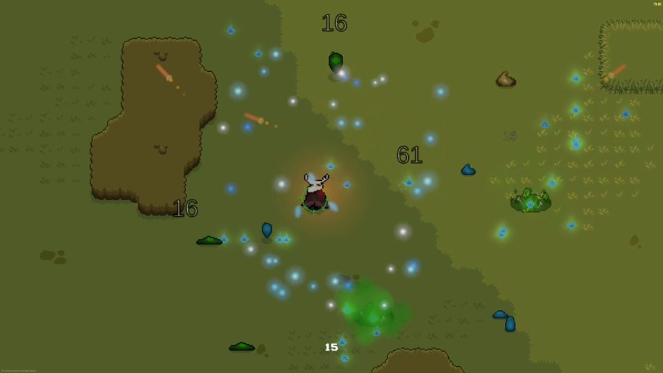
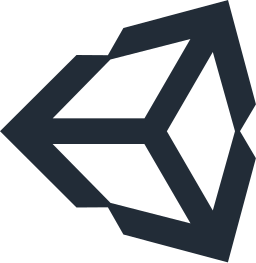

O que eu construí
Abra o que interessar. O domínio muda — pesagem de gado, jogo multiplayer, automação — e a exigência é sempre a mesma: funcionar sem supervisão, com o número certo.

Probov
Pesagem e precificação de bovinos, offline, com relatório em PDF.
5.207 linhas · Dart
 Flutter
Flutter- Drift / SQLite
- Riverpod
- Código aberto
Detalhes
Probov
Pesagem e precificação de bovinos, offline, com relatório em PDF.
- Flutter
- Drift / SQLite
- Riverpod
- Código aberto
Quem compra e vende gado fecha negócio no curral, com o boi na balança e o celular sem sinal. Errar centavo ali, multiplicado por cabeça, vira prejuízo no fim do dia. O app faz a conta durante a pesagem e imprime o documento que fecha o negócio.
Nenhum número passa por ponto flutuante
Dinheiro em centavos, peso em gramas, arroba em centésimos, percentual em basis points. A aritmética roda em inteiro e só vira texto ao exibir — é o que impede o erro de arredondamento de virar divergência de fechamento três meses depois.
// lib/core/format.dart — inteiro entra, texto sai String formatBrl(int centavos) String formatKg(int pesoG) String formatArrobas(int centesimos) // 1664 → 16,64 @
Correção retroativa se propaga sozinha
Peso digitado errado é rotina. Ao corrigir, o relatório inteiro se refaz, porque é estado derivado das pesagens e não uma cópia gravada.
Banco de verdade, testado em memória
SQLite com Drift e exclusão em cascata. A suíte abre um banco em memória a cada teste; domínio, formatação e geração do PDF têm cobertura própria.
Escrito na ordem certa
O histórico do repositório mostra o método: especificação, plano em 16 tarefas, e só então a implementação camada por camada. As dependências têm versão fixada com o motivo escrito ao lado.



Spirit Mask
Jogo de sobrevivência com co-op online, feito em dupla. Código fechado.
94.930 linhas · C#

Unity- Netcode
- Relay
- Comercial
Detalhes
Spirit Mask
Jogo de sobrevivência com co-op online, feito em dupla. Código fechado.

Unity- Netcode
- Relay
- Comercial
Projeto comercial em Unity, desenvolvido em dupla com Rafael Prata. É o maior em que já trabalhei: 372 scripts, 27 cenas e 111 prefabs.
Multiplayer online, não apenas rede local
Co-op sobre Unity Netcode com Relay e Authentication: dois jogadores em máquinas diferentes, sem depender da mesma rede nem de abrir porta no roteador. Sincronizar inimigo, dano e estado de chefe foi a parte que mais exigiu cuidado.
Ferramenta própria porque o projeto passou do tamanho da mão
Com mais de cem prefabs, mudar um a um deixa de ser viável. Escrevi extensões de editor para aplicar alteração em lote — adicionar componente de rede a todos os inimigos, propagar item novo, registrar ícone de habilidade.
Arte suficiente para o jogo não parar
A maior parte da arte em pixel é nossa, feita no Aseprite; uma parte menor vem de pacotes licenciados para uso comercial, modificados. Desenhar não é minha especialidade e não me vendo como artista — num time de dois, o que importa é nada ficar esperando terceiro.
Preparado para outro idioma desde o começo
Sistema de localização próprio, com seleção em jogo. O texto não fica preso no código: trocar de idioma não pede recompilar.
- Unity
- C#
- Netcode for GameObjects
- Unity Relay
- UI Toolkit
- ScriptableObjects
- Aseprite
Automação e integração
Pipelines que ligam ferramentas que não se falam.
 Python
Python- ffmpeg
- Docker
- APIs de IA
Detalhes
Automação e integração
Pipelines que ligam ferramentas que não se falam.
- Python
- ffmpeg
- Docker
- APIs de IA
O último encadeia geração de imagem por API, síntese de voz e montagem em ffmpeg até sair um vídeo pronto — e é retomável: se falhar no meio, a execução seguinte continua de onde parou em vez de refazer tudo. Quando o caminho pago fica indisponível, cai para um caminho local sem custo.
Também trabalho com n8n em Docker e servidores MCP.
Serve para quem tem um processo manual repetido todo dia.
Experiência profissional
Quase dois anos, em sistema de produção com empresas clientes.
- Monorepo
- Node
- Revisão por PR
Detalhes
Experiência profissional
Quase dois anos, em sistema de produção com empresas clientes.
- Monorepo
- Node
- Revisão por PR
Trabalho diário em monorepo de produção — várias aplicações no mesmo repositório, e nada entra sem branch, pull request e revisão. Tarefa registrada antes do código, sempre.
Entrego em Dart, C#, Node e Python conforme o problema pede. Stack nova não me trava; o que eu não faço é fingir experiência que não tenho nela.